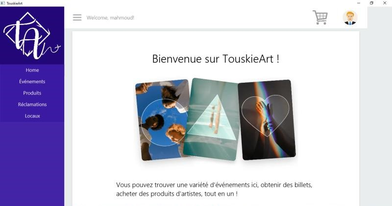
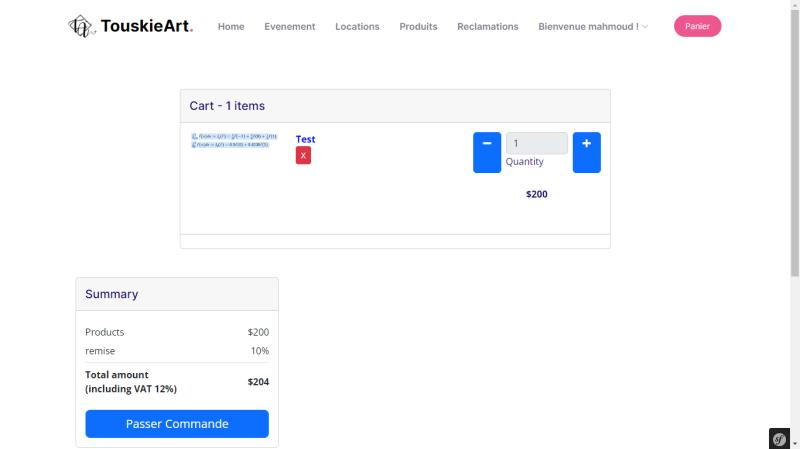
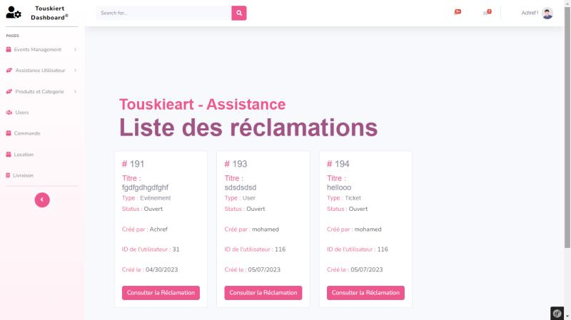
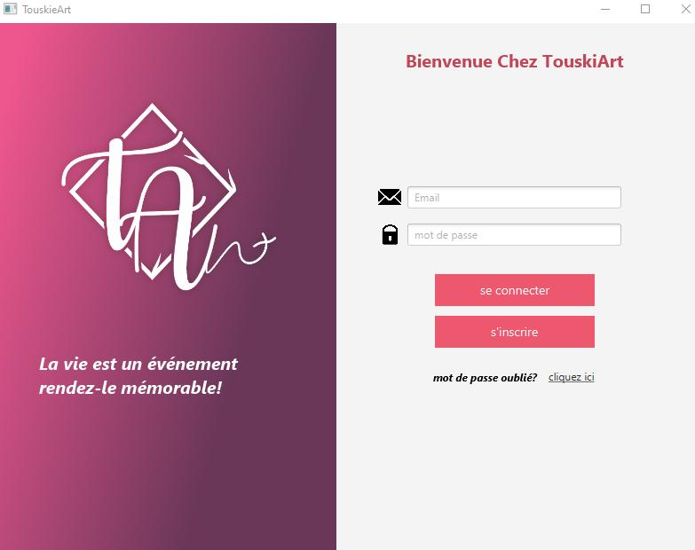
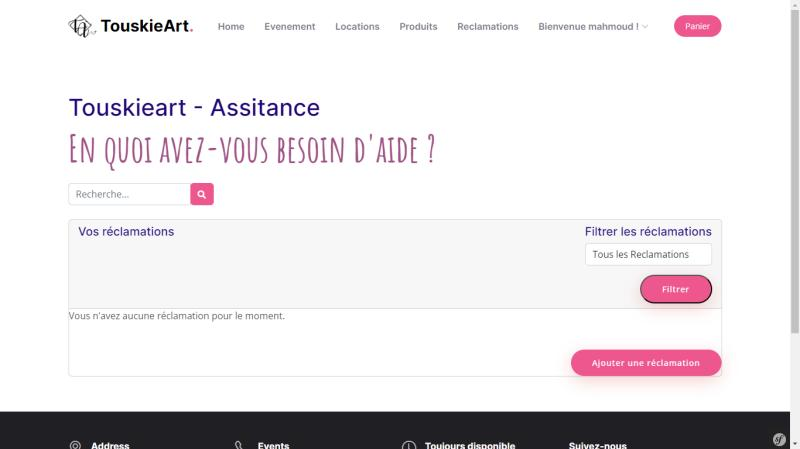
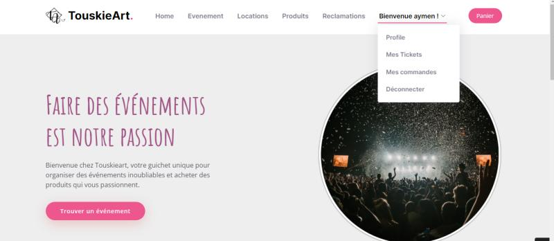

Multi-Platform development project (Java, Symfony, Codename One) - Touskieart

During my time at ESPRIT University in Ariana, I had the privilege of working on an exciting multi-platform development project called Touskieart. This innovative project aimed to create a platform where people and artists could organize and promote cultural events while also providing a marketplace for artists to sell their handmade creations. We developed three versions of the platform: a web version using Symfony, a desktop version using Java, and a mobile version using Codename One.
As a member of the development team, I actively contributed to the design and implementation of various features within each version of the platform. I collaborated with my teammates to ensure the seamless integration of Java, Symfony, and Codename One technologies, leveraging their unique strengths for different platforms.
Throughout the project, I encountered various challenges and opportunities for growth. I applied my Java programming skills to develop the desktop version, utilized Symfony to create a robust web interface, and leveraged Codename One to deliver a seamless mobile experience. I also gained experience in agile development methodologies, ensuring timely iterations and effective communication within the team.
Additionally, I actively participated in user testing and feedback sessions, incorporating valuable insights to improve the platform's functionality and user experience. This experience allowed me to refine my troubleshooting and debugging skills, ensuring a high-quality and reliable end product.
The Touskieart project was not only a technical endeavor but also a testament to the power of collaboration and innovation. It provided me with valuable insights into multi-platform development and instilled in me a passion for creating user-centric solutions.
I am proud of my contributions to the Touskieart project and the skills I acquired throughout its development. I look forward to applying my expertise in future projects and continuing to push the boundaries of software development.
Project Repository Link